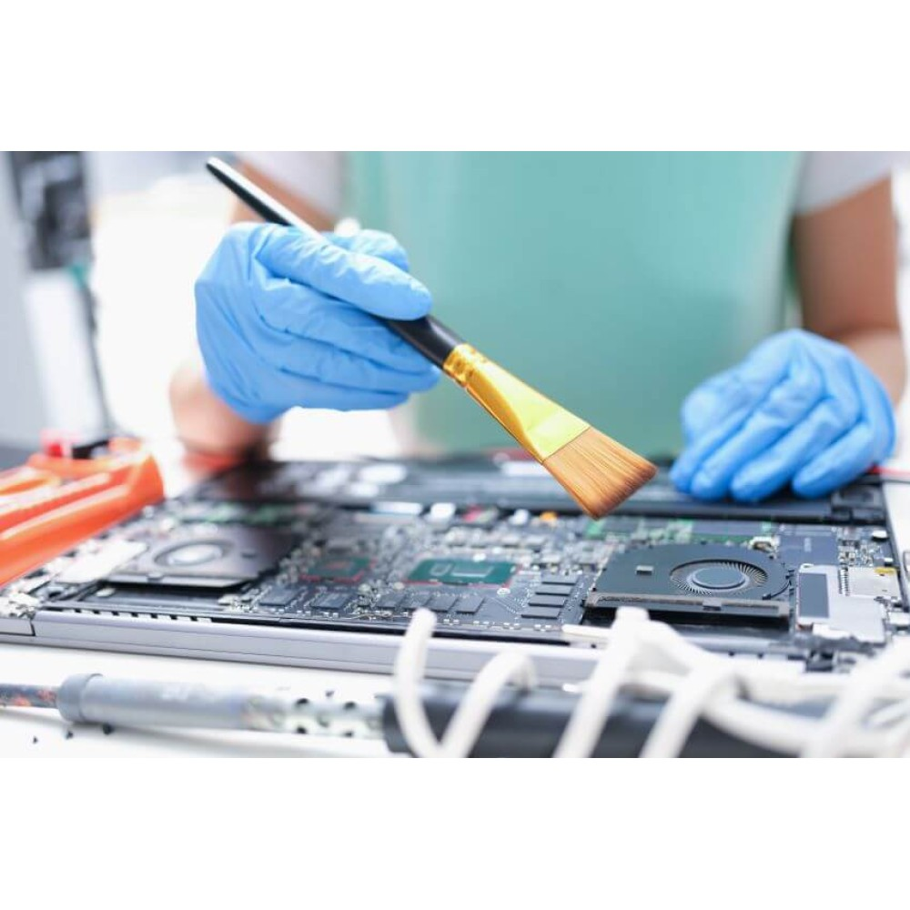
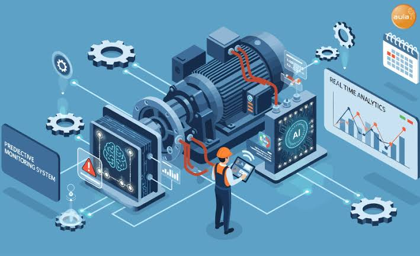

Los principales tipos de mantenimiento se dividen en preventivo, predictivo y correctivo, cada uno con un propósito específico para cuidar equipos e instalaciones.
Entre los tipos de mantenimiento para una computadora encontramos:
Mantenimiento Preventivo

Se define como mantenimiento preventivo a la acción de revisar de manera sistemática y bajo ciertos criterios a los equipos o aparatos de cualquier tipo (mecánicos, eléctricos, informáticos, etc…) para evitar averías ocasionadas por uso, desgaste o paso del tiempo
Mantenimiento Correctivo
Mantenimiento Correctivo El mantenimiento correctivo es un tipo de mantenimiento realizado por los técnicos para corregir un mal funcionamiento de equipos, maquinarias y sistemas. 02 Su objetivo es restablecer el buen estado de funcionamiento y el nivel de rendimiento especificado de las computadoras. El mantenimiento correctivo se denomina a veces mantenimiento reactivo porque se pone en marcha cuando ya se ha producido un fallo en la máquina.
Mantenimiento Predictivo

Una de las formas más relevantes en las que se lleva a cabo este tipo de mantenimiento es a través de la monitorización de sistemas informáticos. 02 En ella, uno o varios operadores controlan el buen funcionamiento de los equipos y sistemas, utilizando herramientas como los software de monitorización, que controlan todo tipo de variables, como la temperatura de la CPU, niveles de batería o muchas otras.